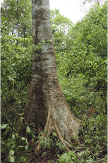
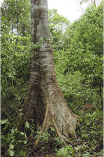
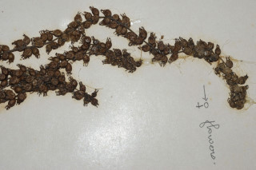
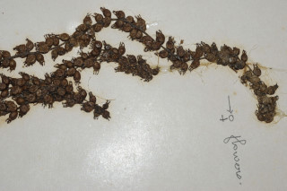

Large, buttressed, deciduous tree, up to 40 m tall.
40 ಮೀ. ಎತ್ತರದವರೆಗೆ ಬೆಳೆಯುವ, ಆನಿಕೆಯುಳ್ಳ, ಎಲೆಯುದುರುವ ಮರಗಳು.
വപ്രമൂലത്തോടുകൂടിയ, 40 മീറ്റര് വരെ ഉയരത്തില് വളരുന്ന, ഇലപൊഴിക്കും വന് മരങ്ങള്.
மிக பெரிய, தாங்கு வேர்களுடைய (பட்ரஸ்டு) இலையுதிர் மரம், 40 மீ. உயரம் வரை வளரக்கூடியது.
Bark greyish white, smooth; blaze cream.
ತೊಗಟೆ ಬೂದು ಮಿಶ್ರಿತ ಬಿಳಿ ಬಣ್ಣ ಹೊಂದಿದ್ದು ನಯವಾಗಿರುತ್ತದೆ ; ಕಚ್ಚು ಮಾಡಿದ ಜಾಗ ಕೆನೆ ಬಣ್ಣದಲ್ಲಿರುತ್ತದೆ.
മിനുസമാര്ന്ന, നരച്ച വെളുത്തനിറത്തിലുളള പുറംതൊലി; വെട്ടുപാടിന് ക്രീംനിറം.
மரத்தின் பட்டை சாம்பல் கலந்த வெள்ளை நிறம், வழுவழுப்பானது; உள்பட்டை கிரீம் நிறமானது.
Branchlets terete, lenticellate.
ಕಿರುಕೊಂಬೆಗಳು ದುಂಡಾಗಿದ್ದು,ಸೂಕ್ಷ್ಮ ವಾಯುವಿನಿಮಯ ಬೆಂಡುರಂಧ್ರಸಮೇತವಾಗಿರುತ್ತವೆ.
ശ്വസനരന്ധ്രങ്ങളോടുകൂടിയ, ഉരുണ്ട ഉപശാഖകള്.
சிறிய நுனிக்கிளைகள் குறுக்குவெட்டுத் தோற்றத்தில் வளையம் போன்றது, லெண்டிசெல் உடையது.
Leaves simple, alternate, spiral, leaves crowded at twig ends; petiole to 10 cm long, pubescent; lamina to 12 x 10 cm, broadly ovate to rounded, acuminate, base cordate, irregularly dentate, subcoriaceous, glabrous above, pubescent beneath, 3-5_nerved_at_base.
ಎಲೆಗಳು ಸರಳವಾಗಿದ್ದು, ಪರ್ಯಾಯ ಮತ್ತು ಸುತ್ತು ಜೋಡನಾ ವ್ಯವಸ್ತೆಯಲ್ಲಿದ್ದು ಕುಡಿಕೊಂಬೆಗಳ ತುದಿಯಲ್ಲಿರುತ್ತವೆ;ತೊಟ್ಟುಗಳು10ಸೆಂ.ಮೀ.ಉದ್ದವಾಗಿದ್ದು,ಮೃದುತುಪ್ಪಳದಿಂದ ಕೂಡಿರುತ್ತವೆ; ಪತ್ರಗಳು12X10ಸೆಂ.ಮೀ.ವರೆಗಿನ ಉದ್ದವಿದ್ದು, ವಿಶಾಲವಾದ ಅಂಡಾಕಾರದಿಂದ ಹಿಡಿದು ದುಂಡಾಕಾರ- ದವರೆಗಿನ ಆಕಾರದಲ್ಲಿರುತ್ತವೆ, ತುದಿ ಕ್ರಮೇಣ ಚೂಪಾಗುವ ರೀತಿಯಲ್ಲಿದ್ದು ಬುಡ ಹೃದಯಾಕಾರದಲ್ಲಿರುತ್ತದೆ, ಅಂಚು ಅನಿಯತವಾಗಿ ದಂತಿತವಾಗಿರುತ್ತದೆ, ಮೇಲ್ಮೈ ಉಪ-ತೊಗಲಿನ ಮಾದರಿಯಲ್ಲಿದ್ದು ಪತ್ರದ ಮೇಲ್ಭಾಗ ರೋಮರಹಿತವಾಗಿದ್ದು ತಳಭಾಗ ಮೃದುತುಪ್ಪಳದಿಂದ ಕೂಡಿರುತ್ತದೆ;ಪತ್ರದ ಬುಡಭಾಗದಲ್ಲಿ ಮೂರರಿಂದ 5 ನಾಳಗಳಿರುತ್ತವೆ.
ഇലകള് ലഘുവും, ഏകാന്തരക്രമത്തില്, സര്പ്പിളമായി, തണ്ടുകളുടെ അറ്റത്ത് കൂട്ടമായി ക്രമീകരിച്ചിരിക്കുന്ന വിധത്തിലാണ്; ഇലഞെട്ടിന് 10 സെ.മീ നീളം, ലഘുവായി രോമിലമാണ്; പത്രഫലകത്തിന് 12 സെ.മീ വരെ നീളവും 10 സെ.മീ വരെ വീതിയും. ആകൃതി വീതിയേറിയ അണ്ഡാകാരം മുതല് വൃത്താകാരം വരെയാണ്, പത്രാഗ്രം ദീര്ഘമാണ്, പത്രാധാരം ഹൃദയാകാരത്തിലും, അരികുകള് ക്രമരഹിതമായി ദന്തിതമാണ്, ഉപചര്മ്മില പ്രകൃതം, മുകളില് അരോമിലവും കീഴ്ഭാഗത്ത് ലഘു രോമിലവുമാണ്, പത്രാധാരത്തില് 3 മുതല് 5വരെ ഞരമ്പുകളുണ്ട്.
இலைகள் தனித்தவை, மாற்றுஅடுக்கமானவை, சுழல் போன்று அமைந்தவை, கிளையின் நுனியில் மட்டும் நெருக்கமாக அமைந்தவை; இலைக்காம்பு 10 செ.மீ. வரை நீளமானது, உரோமங்களற்றது; இலை அலகு 12 X 10 செ.மீ., அகன்ற முட்டை முதல் வட்டவடிவானது (ஆர்பிக்குலார்), அலகின் நுனி அதிக்கூரியது, அலகின் தளம் இதய (கார்டேட்) வடிவானது, அலகின் விளிம்பு ஒழுங்கற்ற பற்களுடையது, சப்கோரியேசியஸ், அலகின் மேற்பரப்பு உரோமங்களற்றது, அலகின் கீழ்பரப்பு உரோமங்களுடையது, அலகு 3-5 நரம்புகளை தளத்திலே உடையது.
Flowers unisexuals, dioecious; male flowers in pubescent panicles, greenish-yellow, subsessile; female flowers sessile, in spikes.
ಹೂಗಳು ಏಕಲಿಂಗಿಗಳಾಗಿದ್ದು ಹೆಣ್ಣು ಮತ್ತು ಗಂಡು ಹೂಗಳು ಪ್ರತ್ಯೇಕ ಸಸ್ಯಗಳಲ್ಲಿರುತ್ತವೆ;ಗಂಡು ಹೂಗಳು ಹಸಿರು ಮಿಶ್ರಿತ ಹಳದಿ ಬಣ್ಣ ಹಾಗೂ ಉಪ-ತೊಟ್ಟು ರಹಿತವಾಗಿರುತ್ತವೆ ಹಾಗೂ ಮೃದುತುಪ್ಪಳದಿಂದ ಕೂಡಿದ ಪುನರಾವೃತ್ತಿಯಾಗಿ ಕವಲೊಡೆಯುವ ಪುಷ್ಪಮಂಜರಿಯಲ್ಲಿರುತ್ತವೆ;ಹೆಣ್ಣು ಹೂಗಳು ತೊಟ್ಟು ರಹಿತವಾಗಿದ್ದು ಕದಿರು ಮಂಜರಿಯಲ್ಲಿರುತ್ತವೆ
പൂക്കള് ഏകലിംഗികളും, ഡയീഷ്യസുമാണ്; ആണ്പൂക്കള് ലഘുരോമിലമായ പാനിക്കിളുകളിലുണ്ടാകുന്നു, ഉപഅവൃന്ത പൂക്കള്ക്ക്, പച്ചകലര്ന്ന മഞ്ഞനിറമാണ്; പെണ്പൂക്കള് അവൃന്തവും, സൈ്പക്കുകളില് ഉണ്ടാകുന്നു.
மலர்கள் ஒர் பாலானவை, ஈரகம் கொண்டவை; ஆண்மலர்கள் உரோமங்களுடைய பேனிக்கிள், பச்சை கலந்த மஞ்சள் நிறமானது, சிறியகாம்புடையது; பெண்மலர்கள் காம்பற்றவை, ஸ்பைக் மஞ்சரிகளில் காணப்படுகின்றன.
Capsule, faintly 8-ribbed, glandular, urceolate, 0.4 cm long; seeds many, minute.
ಕಾಯಿಗಳು 0.4 ಸೆಂ.ಮೀ,ವರೆಗಿನ ಉದ್ದವನ್ನು ಹೊಂದಿದ್ದು ಸಂಪುಟ ಮಾದರಿಯಲ್ಲಿರುತ್ತವೆ ಹಾಗೂ ತೀರಾ ತೆಳುವಾದ 8 ಉಬ್ಬಿದ ಗೆರೆಗಳ ಸಮೇತವಿರುತ್ತವೆ ಮತ್ತು ಹೂಜಿ ಆಕಾರದಲ್ಲಿರುತ್ತವೆ;ಬೀಜಗಳು ಅನೇಕವಿದ್ದು ಸೂಕ್ಷ್ಮವಾದ ಗಾತ್ರವನ್ನು ಹೊಂದಿರುತ್ತವೆ.
കായ, 0.4 സെ.മീ നീളമുളള, ഗ്രന്ഥികള് നിറഞ്ഞ, മങ്ങിയ 8-ഞരമ്പുകളുളളതുമായ കുംഭാകൃതിയിലുള്ള കാപ്സ്യൂള് ആണ്; നന്നേ ചെറിയ ധാരാളം വിത്തുകള്.
வெடிகனி (கேப்சூல்), மெல்லிய 8 தழும்புகளுடையது, சுரப்பிகளுடையது, குடுவை வடிவமானது (அர்சீயோலேட்), 0.4 செ.மீ. நீளமானது; விதைகள் அதிக எண்ணிக்கையிலுடையது, நுண்ணியது.
 



 
